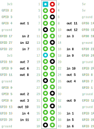

Setup
The only setup required to use Dictel’s io1212 board is to make sure that SPI is not in use. To do that, you can run the following command on your Raspberry Pi:
sudo dtparam spi=off
Pinout
io1212 has been designed to directly map each input/output to a specific Raspberry Pi GPIO pin without the need to use I2C or SPI. This is important for applications where buses such as I2C and SPI are not suitable ([1] or [2]).
The pinout of Raspberry Pi’s GPIO pins, and their mapping to Dictel’s io1212 inputs and outputs, is depicted in the diagram below.
{kind=link}
The same information can be found, in a more readable format, in the table below.
GPIO # |
Dictel io1212 input |
Dictel io1212 output |
Raspberry Pi pin |
|---|---|---|---|
GPIO 4 |
out 1 |
7 |
|
GPIO 5 |
out 2 |
29 |
|
GPIO 6 |
out 3 |
31 |
|
GPIO 7 |
out 4 |
26 |
|
GPIO 8 |
out 5 |
24 |
|
GPIO 9 |
out 6 |
21 |
|
GPIO 10 |
out 7 |
19 |
|
GPIO 11 |
out 8 |
23 |
|
GPIO 12 |
out 9 |
32 |
|
GPIO 13 |
out 10 |
33 |
|
GPIO 14 |
out 11 |
8 |
|
GPIO 15 |
out 12 |
10 |
|
GPIO 16 |
in 1 |
36 |
|
GPIO 17 |
in 2 |
11 |
|
GPIO 18 |
in 3 |
12 |
|
GPIO 19 |
in 4 |
35 |
|
GPIO 20 |
in 5 |
38 |
|
GPIO 21 |
in 6 |
40 |
|
GPIO 22 |
in 7 |
15 |
|
GPIO 23 |
in 8 |
16 |
|
GPIO 24 |
in 9 |
18 |
|
GPIO 25 |
in 10 |
22 |
|
GPIO 26 |
in 11 |
37 |
|
GPIO 27 |
in 12 |
13 |
Line Identifiers
After installing libgpiod (see Using libgpiod), you can run the gpioinfo command to obtain the line identifiers for each GPIO line. Note how the line identifiers correspond to the GPIO number: for example, GPIO 5 has a line id of 5, GPIO 17 has a line id of 17, etc.
ubuntu@rpi:~$ sudo gpioinfo
gpiochip0 - 54 lines:
line 0: "ID_SDA" unused input active-high
line 1: "ID_SCL" unused input active-high
line 2: "SDA1" unused input active-high
line 3: "SCL1" unused input active-high
line 4: "GPIO_GCLK" unused input active-high
line 5: "GPIO5" unused input active-high
line 6: "GPIO6" unused input active-high
line 7: "SPI_CE1_N" "spi0 CS1" output active-low [used]
line 8: "SPI_CE0_N" "spi0 CS0" output active-low [used]
line 9: "SPI_MISO" unused input active-high
line 10: "SPI_MOSI" unused input active-high
line 11: "SPI_SCLK" unused input active-high
line 12: "GPIO12" unused input active-high
line 13: "GPIO13" unused input active-high
line 14: "TXD1" unused input active-high
line 15: "RXD1" unused input active-high
line 16: "GPIO16" unused input active-high
line 17: "GPIO17" unused input active-high
line 18: "GPIO18" unused input active-high
line 19: "GPIO19" unused input active-high
line 20: "GPIO20" unused input active-high
line 21: "GPIO21" unused input active-high
line 22: "GPIO22" unused input active-high
line 23: "GPIO23" unused input active-high
line 24: "GPIO24" unused input active-high
line 25: "GPIO25" unused input active-high
line 26: "GPIO26" unused input active-high
line 27: "GPIO27" unused input active-high
[...]